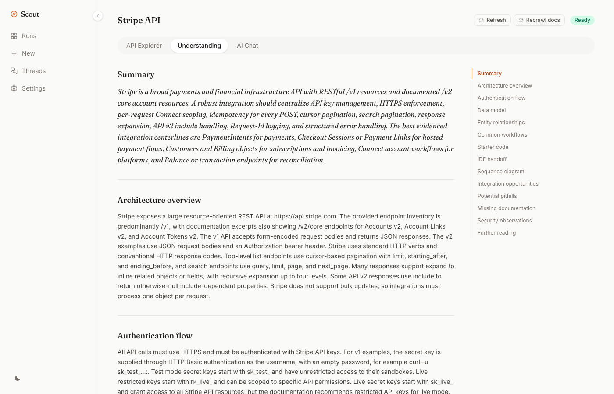
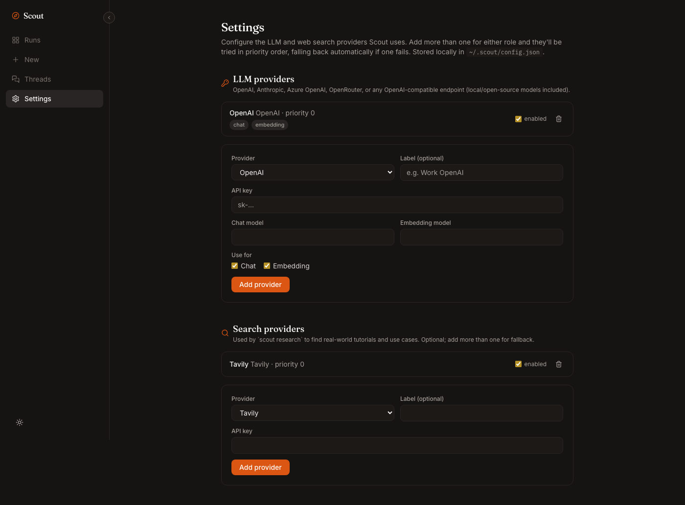

Documentation
Everything Scout does, on all three surfaces - the CLI, the local web app, and the MCP server - documented against the real source, not paraphrased.
Quickstart
Five minutes, install to a grounded chat. Requires Node 22+. No account, no API server to sign up for, no telemetry.
1. Installnpm install -g @dotapk7/scoutcli
2. Add an LLM providerScout needs an LLM for synthesis and chat, and an embeddings model for search - OpenAI, Anthropic, Azure OpenAI, OpenRouter, or any local/self-hosted model speaking the OpenAI chat-completions protocol (Ollama, LM Studio, vLLM).
scout config llm add openai --api-key sk-... scout config llm add anthropic --api-key sk-ant-... scout config llm add azure-openai --base-url https://your-resource.openai.azure.com --api-key ... --chat-model gpt-4o scout config llm add openai-compatible --base-url http://localhost:11434/v1 --api-key ollama --chat-model llama3.1
Anthropic has no embeddings API, so pair an Anthropic entry (chat role) with an OpenAI/Azure/compatible entry (embedding role) for Claude synthesis + non-Anthropic embeddings. scout config llm list shows what's configured; keys are never printed back. Skip this step and Scout falls back to OPENAI_API_KEY in your shell.
3. Point it at a platformThe OpenAPI/Swagger spec (URL or local file), and optionally doc pages to crawl for grounded chat, following same-site links up to --docs-depth hops (default 2), capped at --docs-max-pages (default 50).
scout understand https://petstore3.swagger.io/api/v3/openapi.json --docs https://example.com/docs
4. Use itscout serve opens the web app at http://127.0.0.1:4207 - Runs, New, Threads, Settings. Prefer a terminal? Same capabilities:
scout chat petstore-openapi-3-0 --thread "auth questions" scout generate petstore-openapi-3-0 --lang ts scout handoff petstore-openapi-3-0 --lang ts --thread "auth questions" --copy
5. Wire it into your coding agentclaude mcp add scout -- scout mcp
See MCP reference for Claude Desktop, Cursor, Codex CLI, and Gemini CLI.
scout watch <slug> polls a run's doc URLs and refreshes automatically when they change, archiving the previous snapshot so scout diff can show exactly what changed.Why Scout exists
The honesty model behind every answer.
A generic chat model reasoning over pasted docs has no way to tell "this is definitely true" from "this sounds plausible." It invents an endpoint that doesn't exist with the same confidence as one that does. Scout uses the OpenAPI spec as ground truth for what the API can actually do, and the crawled docs as ground truth for how it's meant to be used, cross-checked against each other rather than either trusted alone.
Every part of Scout is built around one constraint: never present a guess as a fact.
- The understanding agent says "missing documentation" instead of inventing an endpoint, field, or behavior not evidenced in the spec or crawled docs.
scout generateproduces real, syntax-checked code for supported auth schemes only - anything else gets a clearly labeled stub with a stated reason.- A workflow needing a write call, when the script can only demonstrate a read, gets an explicit warning everywhere: the code, the CLI, and the handoff brief.
- Every chat source is tagged: a doc excerpt with a real similarity score, a live web result with a URL, or the model's own knowledge, flagged unverified.
- Folding a thread into a handoff distills only what was actually confirmed - an empty or exploratory thread yields no summary section at all.
- A suspiciously thin crawled page (commonly a JS-rendered SPA a static crawl can't execute) gets a warning banner, not a silently incomplete answer.
- Synthesis is capped per run to control prompt size/cost, and a run's page discloses via banner whenever a cap was actually hit.
Read the full essay: docs/why-scout.md on GitHub.
Architecture
Package layout and the four-agent pipeline.
packages/agents import / documentation / understanding / chat / research agents packages/ai provider-agnostic LLM interface + tool-calling loop packages/rag chunking + citation formatting packages/store AgentStore contract + LocalFileStore packages/connectors connector presets as JSON packages/cli the `scout` binary apps/web the local web app (Next.js), served by `scout serve`
scout understand runs four agents in sequence: Import parses the spec; Documentation crawls doc URLs breadth-first, chunking and embedding the result; Understanding asks an LLM to synthesize the full blueprint, grounded in the spec and crawled chunks, never training data; Chat (on demand) runs a real multi-turn tool-calling loop.
LocalFileStore persists one directory per run under ~/.scout/runs/<slug>/: flat JSON for the current snapshot, append-only JSONL for chat/audit logs, and a history/ folder of prior snapshots whenever a refresh detects a change - this is what powers scout diff, no separate storage mechanism. Hybrid search (embedding cosine similarity blended with keyword relevance) runs in-memory, no database required.
A dormant hosted mode (apps/api + apps/workers, Fastify + Clerk + Postgres/pgvector + BullMQ/Redis) implements the same AgentStore contract over Postgres, kept working but excluded from the default build/test pipeline, for anyone who wants a multi-user deployment.
Understand & import
The one command that runs the whole pipeline.
scout understand <source> [options]Import an OpenAPI/Swagger spec (URL or local file), optionally crawl docs, and generate the understanding.
| Flag | Type / default | Description |
|---|---|---|
| <source> | required | Spec URL or local file path |
| --docs <url> | repeatable, default [] | Doc page(s) to crawl for grounded chat |
| --docs-depth <n> | default 2 | Same-site link hops to follow past each --docs URL |
| --docs-max-pages <n> | default 50 | Hard cap on total doc pages crawled |
| --label <name> | optional | Human-readable run name (defaults to spec title / connector name) |
| --connector <slug> | optional | A known connector slug to prefill label/docs |
| --kind <kind> | optional | openapi_url | openapi_raw | swagger_url |
Chat & threads
A real agentic loop with tool access, not single-shot RAG.
scout chat <slugs> [options]Chat with a platform (or several, comma-separated), grounded in its indexed docs, with tool access (search, codegen, handoff assembly) and sourced answers.
| Flag | Type / default | Description |
|---|---|---|
| <slugs> | required | A run slug, or comma-separated slugs for a multi-platform conversation |
| --thread <name> | default "Main" (single-slug only) | Chat in a named thread, created if new. Required across multiple platforms |
scout chat stripe,hubspot --thread "cross-platform sync"
Generate & handoff
Turn a stored blueprint into something you can run or hand to a coding agent.
scout generate <slug> [options]Generate a runnable starter script: the auth handshake plus one real read call.
| Flag | Type / default | Description |
|---|---|---|
| <slug> | required | The run slug (see scout list) |
| --lang <lang> | default ts | ts or py |
| --workflow <name> | optional | A commonWorkflows name to target (defaults to the first) |
| --out <path> | optional | Write to a file instead of stdout; refuses to overwrite |
| --list-workflows | boolean, default false | Print available workflow names and exit |
scout handoff <slug> [options]Assemble a paste-ready integration brief for a coding agent.
| Flag | Type / default | Description |
|---|---|---|
| <slug> | required | The run slug |
| --lang <lang> | default ts | ts or py |
| --workflow <name> | optional | Target workflow (defaults to the first) |
| --out <path> | optional | Write to file instead of stdout |
| --copy | boolean, default false | Copy the brief to the system clipboard instead of printing |
| --thread <name> | optional | Fold a named thread's findings into an "already figured out" section |
Maintain a run
Detect drift, regenerate, poll for changes, and export.
scout diff <slug> [--json]Show what changed in a run's understanding since its last refresh.
| --json | boolean, default false | Print the raw diff as JSON instead of a summary |
scout refresh <slug> [options]Regenerate a run's understanding, picking up raised limits or new documentation.
| --recrawl | boolean, default false | Also re-fetch doc URLs first (needed if depth/page-cap changed) |
| --docs-depth <n> | optional | Override crawl depth (only with --recrawl) |
| --docs-max-pages <n> | optional | Override crawl page cap (only with --recrawl) |
scout watch <slug> [--interval <seconds>]Poll a run's doc URLs and refresh automatically when they change. Runs until Ctrl+C; errors if the run has no --docs URLs.
| --interval <seconds> | default 3600 | Polling interval |
scout export <slug> [--format md|json]Export a platform's understanding.
| --format <format> | default md | md or json |
scout research <slug>Find related articles, tutorials, and real-world use cases (needs a Tavily or SerpApi key). No options.
Doc sources
Ground chat and handoffs in more than a run's crawled --docs URLs.
scout docs add <slug> <file-or-url>Attach a local file or an http(s) link to a run's grounded doc corpus. PDF, docx/xlsx/pptx, odt/odp/ods, rtf, csv, md, html, txt, json, yaml - up to 10 MB. Google Drive share links are refused with a clear reason.
scout docs list <slug>List every doc source (crawled, uploaded, or linked) behind a run's grounded chat.
scout docs rm <slug> <source-url>Remove a doc source, and every chunk it produced, from a run.
Connectors & config
Provider setup and platform presets.
scout connectors list / scout connectors add <file>List bundled + user-added connector presets, or drop a new JSON preset into ~/.scout/connectors/ (overrides a bundled preset by slug, or adds a new one).
scout config llm add <kind> [options]Add/update an LLM provider entry. kind: openai | anthropic | azure-openai | openrouter | openai-compatible.
| Flag | Type / default | Description |
|---|---|---|
| --api-key <key> | required unless --id exists | Provider API key (or placeholder for keyless local endpoints) |
| --id <id> | optional, random default | Stable id - updates in place if it already exists |
| --label <label> | optional | Name shown in the web viewer |
| --base-url <url> | required for openai-compatible/azure-openai | Endpoint base URL |
| --chat-model <model> | optional | Chat model id / Azure deployment name |
| --embedding-model <model> | optional | Embedding model id / Azure deployment name |
| --azure-api-version <v> | default 2024-10-21 | Azure OpenAI only |
| --roles <roles> | default chat,embedding | Comma-separated: chat, embedding, or both |
| --priority <n> | default 0 | Lower tried first within a role |
| --disabled | boolean, default false | Add without enabling |
Plus scout config llm enable/disable/remove/list <id>, and the same shape for scout config search add <tavily|serpapi> (used by scout research). scout config set <key> <value> is a legacy single-key shorthand; scout config get prints masked config as JSON.
Runs & MCP server
List, delete, serve, and expose runs.
scout listList every platform you've run Scout against, most recently updated first. No options.
scout rm <slug> [-y, --yes]Delete a run and everything under it (understanding, chat history, doc chunks). -y/--yes skips the confirmation prompt.
scout serve [options]Start the local viewer, 127.0.0.1 only by default, no login.
| --port <port> | default 4207 | Port to listen on |
| --host <host> | default 127.0.0.1 | Bind address - use 0.0.0.0 for Docker/remote access |
scout mcpRun Scout as a stdio MCP server. No arguments - see the MCP reference below.
MCP reference
scout mcp runs a standard stdio MCP server (built on @modelcontextprotocol/sdk). Every tool is a thin wrapper around the same agent/store functions the CLI calls - there's no separate implementation to fall out of sync.
Claude Codeclaude mcp add scout -- scout mcp
or in a project's .mcp.json:
{ "mcpServers": { "scout": { "command": "scout", "args": ["mcp"] } } }
Claude Desktop · Cursor · Gemini CLIclaude_desktop_config.json, .cursor/mcp.json, or ~/.gemini/settings.json:
{ "mcpServers": { "scout": { "command": "scout", "args": ["mcp"] } } }
Codex CLI~/.codex/config.toml:
[mcp_servers.scout] command = "scout" args = ["mcp"]
"scout" for "node" and add the built entry point as the first arg: ["/path/to/scout/packages/cli/dist/index.js", "mcp"].The twelve tools
Same capabilities as the CLI and web app.
understand_platformImport a spec (URL), crawl doc pages, generate the full understanding. Returns the slug every other tool needs.
ask_platformAsk a grounded question, scoped to a thread (default main). Agentic: a real multi-turn tool-calling loop that can call search_docs, search the live web, generate starter code, or assemble a handoff brief. Pass slugs (2+) plus title to ask across multiple platforms at once.
list_platformsList every run Scout has already analyzed, with slug and status.
list_connectorsList known connector presets.
refresh_platformRegenerate a run's understanding. recrawl: true also re-fetches doc URLs first.
diff_platformDrift detection: what changed in a run's understanding since its last refresh.
generate_platformGenerate a real, syntax-checked starter script (or an honest stub) from a run's blueprint.
handoff_platformAssemble a paste-ready integration brief. Pass thread to fold that thread's conversation in as a distilled summary.
attach_document_platformAttach a local file (readable from where scout mcp runs) or an http(s) link to a run's grounded doc corpus. Pass exactly one of filePath or url.
export_platformExport the full understanding as Markdown or JSON.
research_platformFind related articles, tutorials, and real-world use cases via a configured web search provider.
remove_platformDelete a run and everything under it. Requires confirm: true.
A real agent workflow
A developer working in any MCP-speaking coding agent, with Scout already added as an MCP server:
- "Import the Stripe API and tell me how subscriptions work." →
understand_platformruns the full pipeline,ask_platformanswers with real citations. - "Give me a starter script for creating a subscription." →
generate_platformreturns real, syntax-checked TypeScript, or an honest stub. - "Prep a handoff brief for the invoicing workflow, and fold in what we just discussed." →
handoff_platformwiththreadset. - Three weeks later: "Has anything changed since we last looked at this?" →
diff_platformreports exactly what's different. - "Now that Stripe's imported, how would it talk to the HubSpot integration we already have?" →
ask_platformwithslugs: ["stripe", "hubspot-contacts"]merges and cites both platforms in one answer.
None of this requires running a single scout command by hand - the agent drives the whole pipeline through MCP.
Web UI reference
scout serve opens the viewer at http://127.0.0.1:4207. A persistent sidebar (Runs / New / Threads / Settings) collapses to icon-only, with state persisted to localStorage.
Runs & New
Every platform you've pointed Scout at, most recently updated first, with status and a delete action. The New tab runs the identical pipeline scout understand does - fire-and-poll: the request returns immediately and the run's page polls live - so a UI-only user never has to touch the terminal after the initial install.

Threads
A flat, Claude/ChatGPT-style thread list across every platform imported, not grouped by run. Create, rename, delete, filter by platform. A thread can span two or more platforms at once - search_docs merges and re-ranks results and tags every citation by platform. Panes are independently draggable and resizable.


Understanding page
Summary, table of contents, architecture, auth flow, data model, a real Mermaid entity-relationship diagram, common workflows, pitfalls, security observations, and documentation gaps - plus "Starter code" and "IDE handoff" sections and an "Attach a document" control, all sharing the exact functions the CLI uses.



API Explorer
Every endpoint the spec declares, method-color-coded, searchable - no scrolling through YAML. Per-endpoint code snippets reflect the run's real detected auth scheme, never a hardcoded default.

Settings
Configure LLM and search providers once - the same ~/.scout/config.json the CLI's scout config reads and writes. Keys are never shown again after entry, and an empty-state banner walks through setup when nothing's configured yet.

Generated code
Two commands, one shared code generator - the script in a handoff brief is never different from what scout generate produces alone.
scout generate
Produces a runnable starter script: the auth handshake, plus one real, working call against a read (GET) endpoint. Real output is syntax-checked (node --check for TypeScript, python3 -m py_compile for Python) before it's returned - that proves the code parses, not that the API call succeeds against a live account.
Field names from the real response schema are normalized into valid identifiers. Required path parameters become explicit placeholders, never invented example values.
scout handoff
Bundles the task/workflow steps, auth flow, the exact starter script, its .env.example, the specific endpoint used, and real pitfalls/security observations into one Markdown brief, paste-ready for Claude Code, Cursor, or any coding agent. --thread <name> makes one extra LLM call to distill that thread's history into an "Already figured out in chat" section above the Task section - not a raw transcript. Free text is sanitized against markdown fence-break injection, since this brief is designed to be pasted directly into an agentic tool.
Auth-scheme coverage, honestly
| Auth scheme | Real template? | Otherwise |
|---|---|---|
| API key in a header | Yes | - |
| Bearer token | Yes | - |
| API key as query param | Yes | - |
| OAuth2, Basic, no endpoints, write-only workflows | No | Honest, clearly labeled stub with a stated reason (e.g. unsupported-auth-scheme:oauth2) |
This started at two schemes and grew to three after real-world testing against Stripe/GitHub/HubSpot showed the two-scheme version missed HubSpot's query-param auth entirely - the taxonomy expands based on what's actually blocking real runs.
Connectors
A connector is a JSON preset, not code - it maps a slug to a suggested docs URL and default auth scheme, saving a search for "where's the OpenAPI spec." It doesn't gate what Scout can import: the pipeline works against any valid spec, connector or not.
scout connectors list scout connectors add acme.json
18 connectors are declared today; 2 (Contentful, Bynder) are verified end-to-end. Marking implemented: true requires actually running scout understand against the platform and checking the output.
| Slug | Category | Verified |
|---|---|---|
| contentful | cms | Yes |
| bynder | dam | Yes |
| aem, sanity, wordpress | cms | Not yet |
| cloudflare-images, cloudinary | dam | Not yet |
| confluence, notion | knowledge | Not yet |
| dropbox, google-drive, sharepoint | storage | Not yet |
| hubspot, salesforce | crm | Not yet |
| asana, jira, monday | workflow | Not yet |
| slack | communication | Not yet |
Bundled connectors live in packages/connectors/registry/*.json. See CONTRIBUTING.md to add one.
Docker
For anyone who'd rather not install Node/pnpm at all.
git clone https://github.com/prabhuavula7/scout.git cd scout docker compose up
Open http://localhost:4207 - the same web app a native scout serve gives you. Runs and provider config persist in a named Docker volume (scout-data) across restarts and rebuilds.
OPENAI_API_KEY=sk-... TAVILY_API_KEY=tvly-... docker compose up
or a .env file next to docker-compose.yml - Compose reads it automatically. The CLI works identically through the container:
docker compose exec scout scout understand https://petstore3.swagger.io/api/v3/openapi.json --docs https://example.com/docs docker compose exec scout scout list
There's no published image on Docker Hub/GHCR yet - build: . always builds locally. docker compose up --build rebuilds after pulling new commits.
Local development
pnpm install pnpm build # builds everything except the dormant hosted mode pnpm --filter @dotapk7/scoutcli dev -- understand <spec-url> --docs <docs-url> pnpm --filter @dotapk7/scoutcli build && node packages/cli/dist/index.js serve
pnpm typecheck / pnpm lint / pnpm test cover the default CLI + local viewer path, including apps/web's own Vitest + React Testing Library suite. pnpm hosted:build / pnpm hosted:dev cover the dormant hosted mode.
Iterate on the UI directly against real ~/.scout/runs/ data without rebuilding the CLI's bundled viewer:
pnpm --filter @scout/web dev # http://localhost:3000
Working from source, Scout falls back to OPENAI_API_KEY in your shell if nothing's configured yet - covers OpenAI only; every other provider needs scout config llm add.
See CONTRIBUTING.md for adding connectors, LLM/search providers, or import kinds.
Real examples
Three platforms verified end-to-end against real, public specs and docs - real output, not illustrative copy.
Stripe
Asked "How do I authenticate with the Stripe API?" - four real citations straight from the crawled docs. scout generate stripe --lang ts correctly refuses to fabricate code: Stripe's real scheme is HTTP Basic, which v1's codegen doesn't template, so it returns a clearly labeled stub.
HubSpot (Contacts)
Uses api_key_query auth, one of the three v1 supports with a real template - produces real, node --check-validated TypeScript. The synthesized blueprint's pitfalls section pulled 25+ real, specific constraints (batch limits, idempotency-key pruning, lifecycle-stage ordering) straight from HubSpot's crawled docs, not generic advice.
GitHub (REST API)
Public REST endpoints declare a none auth scheme, distinct from token-gated ones. Scout correctly separated the two and stubbed honestly rather than guessing a default header GitHub never asked for.
FAQ
Does Scout send my data anywhere?
No hosted backend, no accounts, no telemetry. The only network calls are the ones you configure: the platform's spec/docs URLs, your chosen LLM provider, and your chosen search provider (if enabled). Everything else stays under ~/.scout/.
Why isn't this just ChatGPT with the docs pasted in?
A generic chat model has no way to tell "this is definitely true" from "this sounds plausible." Scout cross-checks the OpenAPI spec against crawled docs and is instructed to say "missing documentation" instead of guessing, with real tool access to re-search mid-conversation.
Why isn't this Swagger UI?
Swagger UI renders a spec. It doesn't crawl docs, synthesize an architecture overview, answer questions, generate starter code, or expose an MCP tool. Scout's primary output is an understanding - a spec viewer is a side effect of already having imported the endpoints.
Does this cost money to run?
Scout itself is free and open source. You pay whatever your configured LLM/search provider charges. scout understand prints a size estimate before starting, and local models via Ollama/LM Studio work for zero marginal cost.
Does it work with local/open-source models?
Yes - anything speaking the OpenAI chat-completions wire protocol works via scout config llm add openai-compatible --base-url <endpoint>: Ollama, LM Studio, vLLM, or a hosted OpenRouter model.
What happens to my API keys?
Stored in ~/.scout/config.json on your machine, never printed back by scout config llm list, never transmitted anywhere except directly to the provider you configured.
Can multiple people on my team share runs?
Not today - LocalFileStore is single-machine by design. A dormant hosted mode (apps/api, apps/workers, Postgres-backed, multi-user) exists in the repo for anyone who wants a shared deployment.
What if the platform doesn't have a public OpenAPI spec?
Scout needs one - that's the ground-truth contract the honesty model is built on. Many platforms without an advertised spec still have one (check /openapi.json, /swagger.json). If a platform genuinely has none, Scout isn't the right tool yet.
Is the generated code safe to run against a live API?
It's syntax-checked, not execution-tested. "Syntax validated" means it parses, not that the call succeeds or matches your account's permissions. Treat it as a correct starting point, not a finished integration.